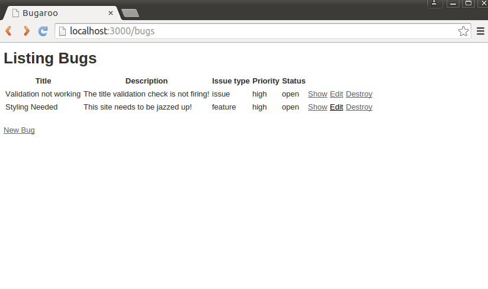
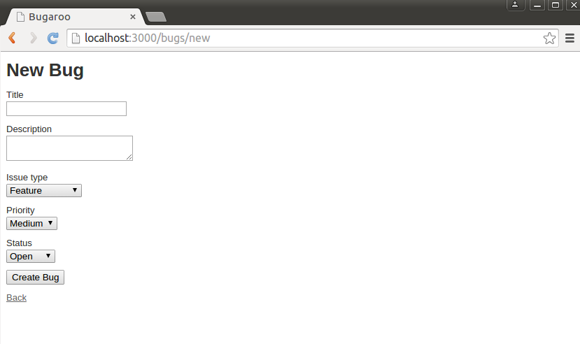

CIS 371 |
Server Side |
Winter 2023 |
Based on an assignment originally originally designed by Prof. Engelsma
For this sequence of assignments, you will build a simple web application using a server-side framework of your choice (Express, Rails, Flask, .etc) The framework must be server-side. You may not use client-side systems such as React, Angular, Vue, etc.
This is a solo assignment.
Please use this GithubClassroom URL: https://classroom.github.com/a/7ul6DBJp
Part 1: Basic CRUD
Use what you have learned in class to create a single resource/model. You can design any model you like, provided that it has at least four properties, and those properties are a mix of types. (Hint: Pick something from your project.)
If you are completely stumped, you can create a Bug resource that models
the bugs in a project. (Later you will add additional models to the app.) Bugs are represented with this
information:
- Title: a short descriptive title summarizing the problem.
- Description: a longer piece of text which describes the details of the problem.
- Issue_type: has three possible values: issue, enhancement, feature.
- Priority: priority of the issue with three possible levels: low, medium, high.
- Status: the current status of the bug with three possible settings: open, closed, monitor.
Generate basic screens for managing your resource (list of all items, show item, edit item, and delete item).
Use sqlite3 or some other "real" relational database. (Don't use my fake "in-memory" DB.)
Pay little attention to styling at this point (e.g. you need not write fancy CSS/SCSS files). Your final product should look somewhat like the screenshots inserted below:



Grading
This part of the assignment will be graded by demo. When your project is ready, schedule a demonstration with me.
Part 2: Cookie
Add a "regular" cookie to your web site from part 1. It does't have to be fancy, a simple color preference will do. (By "regular", I mean that session cookies don't count.)Part 3: Session
Add the ability to login into your site. You can build a User table with stored passwords if you like, but it is not required. (You can "cheat" and just use a formula if you like.) Modify your resource from Part 1 so that users who are logged in only have access to the objects they "own". (This means you will have to add a column to your database table.)Updated Thursday, 2 March 2023, 4:10 PM